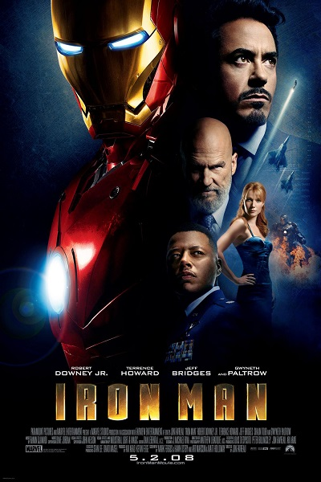
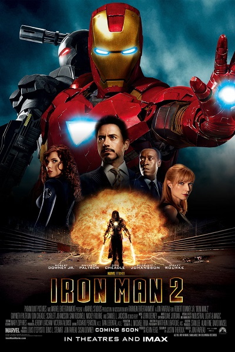
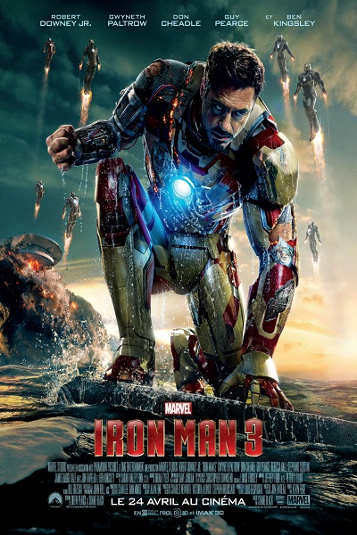

 Iron Man, premier film de cet Univers Cinématique Marvel, nous conte l'histoire de Tony Stark, riche et puissant homme d'affaire américain, fabricant d'armes lourdes à destination militaire, mais également suphéros en armure rouge à ses heures perdues. En déplacement en Afghanistan dans le but de présenter une de ses nouvelles armes, Tony se fait enlever par un groupe de terroristes. Un scientifique va alors l'aider, et le guérira en lui implantant un électro-aimant proche de son cœur. C'est une fois rentrer chez lui que Tony Stark va imaginer une armure lui permettant de combattre le mal tout en alimentant la batterie de son électro-aimant, indispensable à sa survie.
 Dans ce deuxième opus, on découvre un Tony Stark, souffrant. En effet son générateur au palladium l'empoisonne peu à peu, et risque de le tuer pour de bon. Le gouvernement fait alors pression sur lui afin qu'il partage sa technologie avec l'armée, ce qu'il refuse par peur que ces informations tombent entre de mauvaises qui risqueraient de les utiliser dans un but n'allant pas dans le sens pour lequel ces technologies on été créées. Iron Man va alors créer de nouvelles alliances, notamment avec Pepper Potts, et James "Rhodey" Rhodes afin d'affronter de nouvelles forces toujours plus puissantes.
 Dans ce troisième, Iron Man est confronté à un ennemi bien plus puissant qu'il ne l'imaginait, un ennemi agissant sur tous les fronts. Tony Stark se retrouve alors seul dans ce combat, contre son ennemi, mais également dans un combat contre lui-même, où seuls son ingéniosité et son courage seront utiles afin de protéger ses proches. On est cette fois confronté à un Tony Stark qui doute, et qui trouvera peut-être la réponse à une question qui le hante depuis le début : Est-ce l'homme qui fait le costume, ou bien le costume qui fait l'homme ?